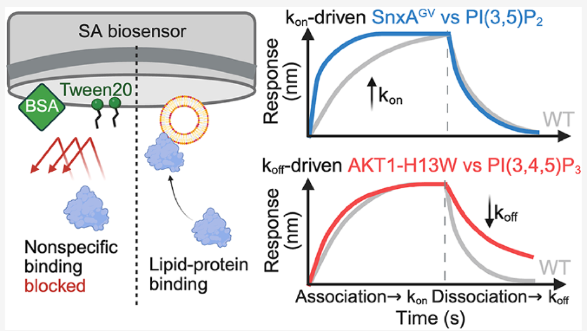
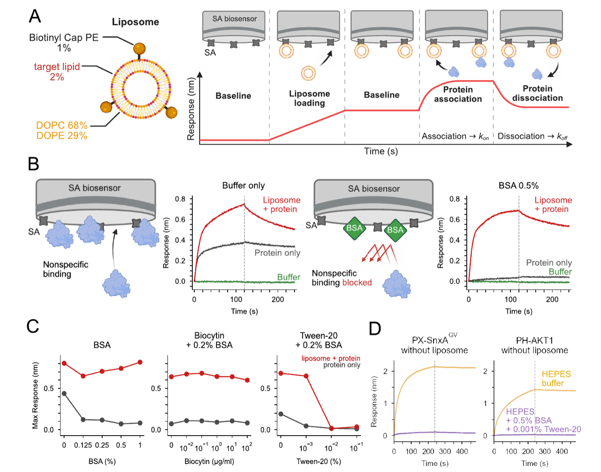
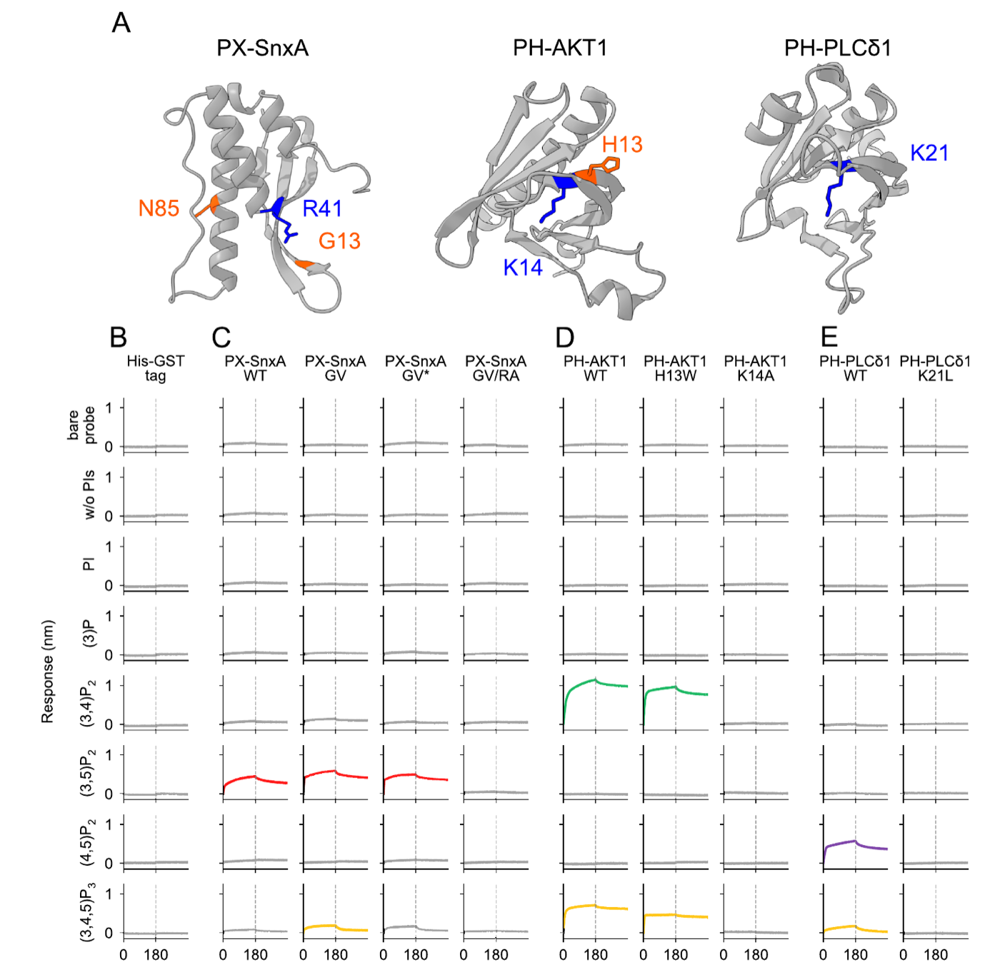
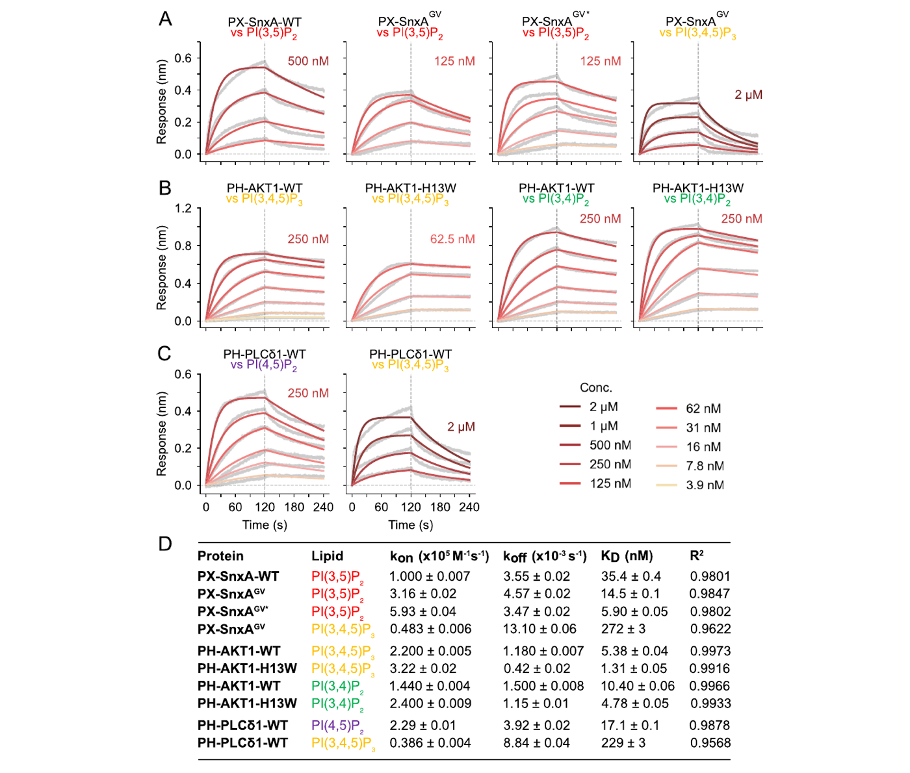

Reading protein–lipid binding in real time
Almost every protein–lipid assay answers “how tightly?” Very few answer “how fast, and how long?” Those two questions have different biological answers, and getting at them took a detergent, a blocking protein, and a great deal of buffer screening.

The number everyone reports, and the two it hides
A eukaryotic cell keeps its compartments straight partly by chemistry. Phosphoinositides, or PIPs, the eight phosphorylated derivatives of phosphatidylinositol, are distributed unevenly across the endomembrane system: PI(4,5)P₂ marks the plasma membrane, PI(3)P early endosomes, PI(3,5)P₂ late endosomes. Proteins with lipid-binding domains (PH, PX, ENTH, GRAM, C2 …) read that distribution and go where they are needed. A single misread can be pathological: the E17K mutation in the AKT1 PH domain changes which PIP the domain prefers and drives cancer.
When we want to describe one of these interactions, we almost always reach for a single number: the dissociation constant, KD. It is a good number. It is also a ratio:
KD = koff / kon
Two proteins can share a KD of 10 nM and behave completely differently in a cell. One arrives at the membrane instantly and leaves quickly; the other takes its time to find the target but stays bound for minutes. For a signalling protein that has to respond to a transient PIP pulse, those are not the same molecule at all. Reporting only KD throws that away.
Why lipids make this hard
Bio-layer interferometry (BLI) is, in principle, exactly the right instrument. A biosensor tip is dipped into a well; molecules binding at the tip surface change the interference pattern of reflected white light, and you watch the response in nanometres, live. Dip into protein and you get association; dip into buffer and you get dissociation. Fit both, and you have kon and koff directly.
In practice, lipid surfaces break it. To present a lipid you have to immobilize a liposome, and the moment you do, proteins start sticking to everything: to the streptavidin layer, to the sensor matrix, to exposed biotin. The instrument faithfully reports all of it. Background can be half your signal, and it is not flat: it has its own kinetics, which contaminate the fit.
The usual reflex is detergent. But the detergent that removes nonspecific protein also dissolves the liposome you are trying to present. That is the real trade-off, and it is why liposome BLI has a reputation for being unreliable rather than merely fiddly.

What actually worked
We screened three additives against both signals at once, the specific one we wanted to keep and the nonspecific one we wanted to remove. The answer turned out to be a narrow window rather than a single reagent:
- BSA at 0.5% does the heavy lifting. It coats the sensor surface and blocks protein–surface contact. Specific binding is untouched.
- Biocytin, the obvious candidate for capping free streptavidin sites, did essentially nothing. Worth reporting: it is the reagent people reach for first.
- Tween-20 at 0.001% removes the last of the background. At 0.01% and above, the specific signal collapses too, which is the liposome coming apart rather than better blocking.
Two orders of magnitude of detergent separate “clean assay” from “no assay”. That is the whole methodological contribution, and it is the kind of thing that is invisible in a final figure unless someone titrates it deliberately.
Does it recover known biology?
A method that only works on the system it was built for is not a method. So we ran a specificity panel first: three well-characterised domains against a set of liposomes covering PI, PI(3)P, PI(3,4)P₂, PI(3,5)P₂, PI(4,5)P₂ and PI(3,4,5)P₃, plus binding-altered mutants of each.

Everything landed where the literature says it should, and the affinity-abolishing mutants went silent. Only then does it make sense to trust the numbers from a system nobody has measured before.
The part that needed kinetics
Now the interesting result. We took concentration series across each pair and fitted globally. Two mutant series stood out, and they moved in opposite ways.

| Protein | Lipid | kon (×10⁵ M⁻¹s⁻¹) | koff (×10⁻³ s⁻¹) | KD (nM) |
|---|---|---|---|---|
| PX-SnxA-WT | PI(3,5)P₂ | 1.000 ± 0.007 | 3.55 ± 0.02 | 35.4 ± 0.4 |
| PX-SnxAGV | PI(3,5)P₂ | 3.16 ± 0.02 | 4.57 ± 0.02 | 14.5 ± 0.1 |
| PX-SnxAGV* | PI(3,5)P₂ | 5.93 ± 0.04 | 3.47 ± 0.02 | 5.90 ± 0.05 |
| PH-AKT1-WT | PI(3,4,5)P₃ | 2.200 ± 0.005 | 1.180 ± 0.007 | 5.38 ± 0.04 |
| PH-AKT1-H13W | PI(3,4,5)P₃ | 3.22 ± 0.02 | 0.42 ± 0.02 | 1.31 ± 0.05 |
Read down the PX-SnxA series: affinity improves about six-fold from wild type to the double mutant, and kon rises six-fold while koff barely moves. These mutations make the domain find and engage the membrane faster. They do not make the bound complex more stable.
Now the AKT1 series: H13W improves affinity roughly four-fold, and it gets there mostly by cutting koff by a factor of three. This mutation stabilises the complex once formed.
Both look like “tighter binding” in any equilibrium assay. Mechanistically they are opposites, faster capture versus longer residence, and for a domain whose job is to respond to a transient lipid signal that distinction is most of the biology.
What I would tell someone starting this
- Run protein against a bare probe as a routine control, not once at the start. It is the single most informative trace in the experiment.
- Titrate detergent against both signals on the same plot. The useful concentration is bounded on both sides, and you cannot see the upper bound if you only monitor background.
- Report kon and koff, not only KD. It costs a concentration series and it is where the mechanism lives.
- Reproduce a few known specificities before believing a new one. It is cheap insurance and it is what makes the new numbers publishable.
The protocol is open and written to be portable. The point was never one instrument in one lab, but a shared way of comparing numbers across labs.
Source paper. Yao, P.; Nishimura, T.*; Tsuboyama, K.* Quantitative Kinetic Analysis of Protein–Phosphoinositide Binding by Optimized Liposome-Based Bio-Layer Interferometry. Biochemistry 2026, special issue “Lipids and Lipidation”. doi.org/10.1021/acs.biochem.6c00344
Figures are reproduced from that article, of which I am the first author. Please cite the paper rather than this page.
实时读出蛋白质与脂质的结合
几乎所有蛋白质–脂质实验回答的都是「结合有多紧」，很少有人回答「结合得多快、停留多久」。而这两个问题在生物学上的答案并不一样。为了拿到它们，我们花了很长时间去筛一支缓冲液。
所有人都在报的那个数，以及它掩盖的两个数
真核细胞靠化学把自己的各个区室区分开来。磷脂酰肌醇（PIPs，即磷脂酰肌醇的 8 种磷酸化衍生物）在内膜系统中分布并不均匀：PI(4,5)P₂ 标记质膜，PI(3)P 标记早期内体，PI(3,5)P₂ 标记晚期内体。带有脂质结合结构域（PH、PX、ENTH、GRAM、C2 ……）的蛋白质读取这套分布，从而知道该去哪里。读错一次就可能致病：AKT1 PH 结构域的 E17K 突变改变了它偏好的 PIP 种类，进而驱动癌症。
要描述这样一个相互作用，我们几乎总是伸手去拿同一个数字：解离常数 KD。这是个好数字。但它同时也是一个比值：
KD = koff / kon
两个蛋白可以同样是 10 nM，但在细胞里的行为完全不同。一个瞬间抵达膜、也很快离开；另一个慢慢找到目标，然后一停就是几分钟。对一个必须响应短暂 PIP 脉冲的信号蛋白来说，这根本不是同一种分子。只报 KD，等于把这部分信息全部丢掉。
脂质让这件事变难
生物层干涉法（BLI）原则上正是合适的工具。传感器针尖浸入孔中，结合到针尖表面的分子改变反射白光的干涉图样，你就能以纳米为单位实时看到响应。浸入蛋白溶液即为结合，浸入缓冲液即为解离。两段都拟合，就直接得到 kon 与 koff。
但脂质表面会把它毁掉。要展示脂质，就得固定脂质体；而一旦固定，蛋白质就开始往所有地方粘：链霉亲和素层、传感器基质、暴露的生物素。仪器会忠实地把这些全部记录下来。背景可以占到信号的一半，而且它并不平坦：它自己也有动力学，会污染拟合结果。
常见的第一反应是加去污剂。但能洗掉非特异吸附的去污剂，同时也会溶掉你想展示的脂质体。这才是真正的权衡，也是脂质体 BLI 名声不好的原因：不是麻烦，是不可靠。
真正有效的是什么
我们把三种添加剂同时对两个信号做了筛选：想保留的特异信号，和想去掉的非特异信号。答案不是某一种试剂，而是一个很窄的窗口：
- 0.5% BSA 承担了主要工作。它覆盖传感器表面，阻断蛋白与表面的接触，同时完全不影响特异结合。
- Biocytin，这个封闭游离链霉亲和素位点的「显然候选者」，基本没有作用。这一点值得写出来，因为它往往是大家第一个想到的试剂。
- 0.001% Tween-20 清掉最后一点背景。到 0.01% 及以上，特异信号也一起塌了：那是脂质体解体，不是封闭得更好。
「干净的实验」和「没有实验」之间，只隔了两个数量级的去污剂浓度。这就是整篇论文在方法上的贡献；如果没有人刻意去做这条滴定曲线，它在最终图里是完全看不见的。
它能重现已知的生物学吗
只在自己开发时用的体系上有效的方法，不算方法。所以我们先做了特异性验证：三个被充分研究过的结构域，对一组覆盖 PI、PI(3)P、PI(3,4)P₂、PI(3,5)P₂、PI(4,5)P₂ 与 PI(3,4,5)P₃ 的脂质体，外加各自的结合改变突变体。
所有结果都落在文献所说的位置上，破坏亲和力的突变体也如期沉默。只有到这一步，我们才有理由相信这套体系在别人没测过的对象上给出的数字。
非要动力学不可的那部分
接下来是有意思的结果。我们对每一对做了浓度梯度并进行全局拟合。两个突变体系列脱颖而出，而且它们的走向恰好相反。
| 蛋白 | 脂质 | kon (×10⁵ M⁻¹s⁻¹) | koff (×10⁻³ s⁻¹) | KD (nM) |
|---|---|---|---|---|
| PX-SnxA-WT | PI(3,5)P₂ | 1.000 ± 0.007 | 3.55 ± 0.02 | 35.4 ± 0.4 |
| PX-SnxAGV | PI(3,5)P₂ | 3.16 ± 0.02 | 4.57 ± 0.02 | 14.5 ± 0.1 |
| PX-SnxAGV* | PI(3,5)P₂ | 5.93 ± 0.04 | 3.47 ± 0.02 | 5.90 ± 0.05 |
| PH-AKT1-WT | PI(3,4,5)P₃ | 2.200 ± 0.005 | 1.180 ± 0.007 | 5.38 ± 0.04 |
| PH-AKT1-H13W | PI(3,4,5)P₃ | 3.22 ± 0.02 | 0.42 ± 0.02 | 1.31 ± 0.05 |
顺着 PX-SnxA 系列往下看：从野生型到双突变体，亲和力提高约 6 倍，而kon 提高了 6 倍，koff 几乎没动。这些突变让结构域更快地找到并接触膜，却并没有让已形成的复合物更稳定。
再看 AKT1 系列：H13W 让亲和力提高约 4 倍，而它主要是靠把 koff 降到三分之一做到的。这个突变稳定的是形成之后的复合物。
在任何平衡实验里，这两者看起来都只是「结合更紧了」。但从机制上说它们正好相反：一个是更快的捕获，一个是更长的停留。对一个需要响应瞬时脂质信号的结构域来说，这个区别几乎就是全部的生物学。
如果有人要从头做这件事
- 把蛋白对裸探针作为常规对照，而不是开头做一次就算了。它是整个实验里信息量最大的一条曲线。
- 把去污剂对两个信号的影响画在同一张图上滴定。有用的浓度区间是两边都有边界的，而只盯着背景，你看不到上边界。
- 报 kon 和 koff，不要只报 KD。代价只是一条浓度梯度，而机制就藏在这里。
- 在相信一个新结果之前，先重现几个已知的特异性。这是很便宜的保险，也正是新数字能被发表的原因。
这套流程是公开的，并且是按「可移植」来写的。目标从来不是某一台仪器、某一间实验室，而是让不同实验室之间的数字能够互相比较。
原始论文。Yao, P.; Nishimura, T.*; Tsuboyama, K.* Quantitative Kinetic Analysis of Protein–Phosphoinositide Binding by Optimized Liposome-Based Bio-Layer Interferometry. Biochemistry 2026，专刊 “Lipids and Lipidation”。doi.org/10.1021/acs.biochem.6c00344
文中图片转载自该论文，本人为第一作者。引用请引原文，而非本页。
タンパク質と脂質の結合をリアルタイムで読む
ほとんどのタンパク質–脂質アッセイが答えるのは「どれくらい強く結合するか」だけ。「どれくらい速く、どれくらい留まるか」に答えるものはほとんどない。この二つは生物学的にまったく別の答えを持つ。それを測るために、長い緩衝液スクリーニングが必要だった。
誰もが報告する数値と、それが隠す二つの数値
真核細胞は化学によって自らのコンパートメントを区別している。ホスホイノシチド（PIPs、すなわちホスファチジルイノシトールの 8 種のリン酸化誘導体）は内膜系に不均一に分布する：PI(4,5)P₂ は細胞膜、PI(3)P は初期エンドソーム、PI(3,5)P₂ は後期エンドソーム。脂質結合ドメイン（PH、PX、ENTH、GRAM、C2 …）を持つタンパク質はその分布を読み、必要な場所へ行く。読み間違いは病理につながる：AKT1 PH ドメインの E17K 変異は好む PIP を変え、がんを引き起こす。
この相互作用を記述するとき、私たちはほぼ必ず同じ数値に手を伸ばす：解離定数 KD。よい数値である。しかし同時に、これは比でもある：
KD = koff / kon
KD が同じ 10 nM でも、細胞内での振る舞いはまったく異なりうる。一方は瞬時に膜に到達しすぐ離れ、もう一方はゆっくり標的を見つけて数分間留まる。一過性の PIP シグナルに応答するタンパク質にとって、この二つは同じ分子ではない。KD だけを報告することは、その情報を捨てることに等しい。
脂質がこれを難しくする
バイオレイヤー干渉法（BLI）は原理的にまさに適した装置である。バイオセンサーの先端をウェルに浸すと、先端表面に結合した分子が反射白色光の干渉パターンを変え、応答をナノメートル単位でリアルタイムに観察できる。タンパク質溶液に浸せば結合、緩衝液に浸せば解離。両方をフィットすれば kon と koff が直接得られる。
ところが脂質表面がこれを壊す。脂質を提示するにはリポソームを固定する必要があり、固定した途端にタンパク質があらゆる場所に貼り付き始める。ストレプトアビジン層、センサーマトリックス、露出したビオチン。装置はそのすべてを忠実に記録する。バックグラウンドはシグナルの半分にも達し、しかも平坦ではない。それ自身の速度論を持ち、フィットを汚染する。
よくある反射的な対応は界面活性剤である。しかし非特異吸着を落とす界面活性剤は、提示したいリポソームそのものも溶かしてしまう。これが本当のトレードオフであり、リポソーム BLI が「面倒」ではなく「信頼できない」と言われてきた理由である。
実際に効いたもの
三つの添加剤を、残したい特異シグナルと消したい非特異シグナルの両方に対して同時にスクリーニングした。答えは単一の試薬ではなく、狭い窓だった：
- 0.5% BSA が主役。センサー表面を覆いタンパク質–表面接触を遮断する。特異結合には影響しない。
- Biocytin、すなわち遊離ストレプトアビジン部位を塞ぐ「当然の候補」は、ほとんど効果がなかった。多くの人が最初に手に取る試薬なので、報告する価値がある。
- 0.001% Tween-20 が最後のバックグラウンドを消す。0.01% 以上では特異シグナルも崩れる。それはブロッキングの改善ではなく、リポソームの崩壊である。
「きれいなアッセイ」と「アッセイが成立しない」の間は、界面活性剤濃度にして二桁しかない。これが本論文の手法上の貢献であり、意図的に滴定しない限り最終図には決して現れない類のものである。
既知の生物学を再現できるか
開発した系でしか動かない手法は手法ではない。そこでまず特異性プロファイリングを行った：よく解析された三つのドメインを、PI、PI(3)P、PI(3,4)P₂、PI(3,5)P₂、PI(4,5)P₂、PI(3,4,5)P₃ を含むリポソームのパネル、およびそれぞれの結合改変変異体に対して測定した。
すべてが文献どおりの位置に落ち、親和性を失わせる変異体は期待どおり沈黙した。ここまで来て初めて、誰も測ったことのない対象について出てくる数値を信頼する意味が生じる。
速度論が必要だった部分
ここからが面白い結果である。各ペアについて濃度系列を取得し、グローバルにフィットした。二つの変異体系列が際立った。しかも、互いに逆方向に。
| タンパク質 | 脂質 | kon (×10⁵ M⁻¹s⁻¹) | koff (×10⁻³ s⁻¹) | KD (nM) |
|---|---|---|---|---|
| PX-SnxA-WT | PI(3,5)P₂ | 1.000 ± 0.007 | 3.55 ± 0.02 | 35.4 ± 0.4 |
| PX-SnxAGV | PI(3,5)P₂ | 3.16 ± 0.02 | 4.57 ± 0.02 | 14.5 ± 0.1 |
| PX-SnxAGV* | PI(3,5)P₂ | 5.93 ± 0.04 | 3.47 ± 0.02 | 5.90 ± 0.05 |
| PH-AKT1-WT | PI(3,4,5)P₃ | 2.200 ± 0.005 | 1.180 ± 0.007 | 5.38 ± 0.04 |
| PH-AKT1-H13W | PI(3,4,5)P₃ | 3.22 ± 0.02 | 0.42 ± 0.02 | 1.31 ± 0.05 |
PX-SnxA 系列を上から下へ読むと、野生型から二重変異体まで親和性は約 6 倍向上し、kon が 6 倍上がる一方 koff はほとんど動かない。これらの変異はドメインが膜を見つけて接触する速さを上げているのであって、形成後の複合体を安定化しているのではない。
AKT1 系列では、H13W が親和性を約 4 倍向上させるが、その主因はkoff を 1/3 に下げることである。この変異は形成後の複合体を安定化する。
どちらも平衡アッセイでは単に「より強く結合する」と見える。しかし機構的には正反対である。速い捕捉か、長い滞在か。一過性の脂質シグナルに応答するドメインにとって、この違いこそが生物学のほとんどである。
これから始める人へ
- 裸プローブに対するタンパク質を、最初に一度ではなく毎回の対照として走らせること。実験中で最も情報量の多いトレースである。
- 界面活性剤は、両方のシグナルに対して同じ図の上で滴定すること。有用な濃度域は両側に境界があり、バックグラウンドだけを見ていては上限が見えない。
- KD だけでなく kon と koff を報告すること。必要なのは濃度系列一本、そしてそこに機構がある。
- 新しい結果を信じる前に、既知の特異性をいくつか再現すること。安価な保険であり、新しい数値が発表に耐える理由でもある。
プロトコルは公開されており、移植可能であることを意図して書かれている。目指したのは一台の装置・一つのラボではなく、ラボ間で数値を比較できる共通の土台である。
原論文。Yao, P.; Nishimura, T.*; Tsuboyama, K.* Quantitative Kinetic Analysis of Protein–Phosphoinositide Binding by Optimized Liposome-Based Bio-Layer Interferometry. Biochemistry 2026、特集号 “Lipids and Lipidation”。doi.org/10.1021/acs.biochem.6c00344
図は同論文からの転載で、筆頭著者は私です。引用は本ページではなく原論文へお願いします。